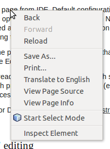

NetBeans Testing App
NetBeans 7.3
Selection Mode
Selection Mode in Chrome can be turned on by either using NetBeans icon in Omnibar or from right click context menu. Selection Mode in Embedded browser can be turned on from its toolbar or using Ctrl+Shift+S shortcut

- Task: Turn on Selection Mode in browser, hover over some element in browser
- Result: Element is highlighted in browser
- Task: Turn on Selection Mode in browser, click on some element in browser
- Result: Element stays highlighted after you hover over another element. The second element is also highlighted but with lighter color
- Result 2: Selected element is also selected in Navigator window (all parents node are expanded)
- Result 3: CSS Styles window is populated with properties of selected element
- Result 4: Properties window shows properties of the selected element (see issue 216425 and issue 216424)
- Task: Having Properties window set to display properties of selected element, click on "..." of some attribute
- Result: New dialog is opened, you can specify a value of a new attribute or modify existing one
- Task: Click on some item in Navigator
- Result: Properties window shows properties for given element, all inspection related windows behaves the same as in task 2
- Task: Hover over some item in Navigator
- Result: Hovered element is highlighted in browser
- Task: Start Select Mode in browser and select some element. Use Ctrl+Click to deselect it
- Result: Element is no longer highlighted and CSS Styles window is cleared. Try the same with Navigator window
- Task: Use Select Mode to select multiple elements using Ctrl+Click on each of them
- Result: Elements are selected, CSS Styles window says "Multiple elements selected". Try the same with Navigator window
Highlight selection
- Run project with checked Highlight selection
- Hover over some element in Navigator. The element should be highlighted in browser
- Go to project properties and turn Highlight Selection off
-
- Result: Hovering in Navigator no longer highlights element in browser. Select Mode is still available after turning off Highlight Selection
JavaFX Browser specific
- Task: Toggle Selection Mode using keyboard shortcut Ctrl+Shift+S
- Result: Selection mode is enabled/disabled